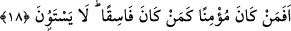

18. Öyle ya, mü’min olan, yoldan çıkmış kimse gibi midir? Bunlar elbette bir
olamazlar.
“Öyle ya,” dünyâda “mü’min olan, yoldan çıkmış” îmandan çıkmış fâsık “kimse gibi
midir?” Burada “fâsık” kelimesi “mü’min”e karşılık olarak îmandan çıkmış anlamında
kullanılmıştır. Yine bu tür fâsık kimsenin (aşağıda 20. âyette) ebedî cehennemlik olduğu
haber verilmiştir. Cehennemde ebedî olarak kalmayı ise ancak kâfir olan hak eder.
“Bunlar elbette” âhirette şeref ve alacakları karşılık bakımından “bir olamazlar.”
Mü’min ile fâsığın birbirine benzemesi reddedildiği halde ardından onların bir
olamayacaklarının açıkça ifâde edilmesi, te’kid için ve sonra gelen âyete zemin teşkil
etmesi amacıyladır.
Kâşifî der ki: “Şöyle rivâyet edilir: Velid bin Ukbe, erlik ormanının aslanı (Hz. Ali)
ile övünme yarışına girdi ve ona “Ey Ali! Benim mızrağımın ucu seninkinden daha sert,
dilim de senin dilinden daha keskindir” dedi. Ali (k.v.) şu karşılığı verdi: “Sus ey fâsık.
Sen benimle nasıl boy ölçüşürsün, nasıl mücadeleye tutuşursun?” İşte bunun üzerine
Hak Sübhânehû ve Teâlâ Ali (r.a.)’ı tasdik için bu âyeti gönderdi.”
Öyleyse âyette zikredilen “mü’min”, Hz. Ali (r.a.)’tır. Ancak onun hâlini ve sıfatını
taşıyan herkes de buna dâhildir. Kâfir ise Velîd’dir. Aynı şekilde Velîd’in hâlini ve
sıfatını taşıyan herkes de bunun içindedir. Bu yüzden “bir olmazlar” ifâdesi çoğul
kullanılmıştır.
İbn Atâ (r.h.) demiştir ki: “Kim îman ve tâat nurlarının içinde olursa, o kimse fısk ve
tuğyan karanlıklarının içinde olan kimse ile bir/eşit olmaz.”
Keşfü’l-esrâr’da da şöyle denilmiştir: “Vuslat elbisesinin içinde, onun eteklerini
sürüyen kimse, ayrılık zilleti içinde, onun ağır vebalini taşıyan kimse gibi olur mu? Yine
Hakk’a yakınlığın rahat ve huzur nefesleri içinde bulunan kişi ile cezâ korkusu içinde
sorumluluğun meşakkatini göğüsleyen kişi bir olur mu? Apaçık delilin nûru ile te’yid
edilen ve üzerine irfan güneşleri doğan kimse ile, ilâhî yardımdan mahrum kalmış ve
mahrûmiyet damgası vurulmuş kişi bir olabilir mi? Elbette bir olmazlar ve bir araya
gelmezler.
Ey Süreyyâ ile Süheyl yıldızının nikâh akdini yapmak isteyen
Allah sana uzun ömür versin amma bu ikisi nasıl bir araya gelir?
Süreyyâ yükselince Şam tarafından yükselir
Süheyl yükselince ise Yemen tarafından yükselir